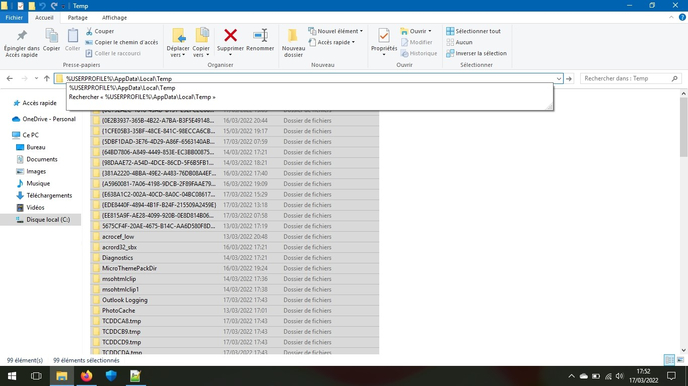
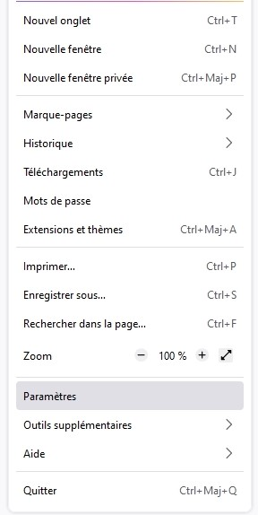
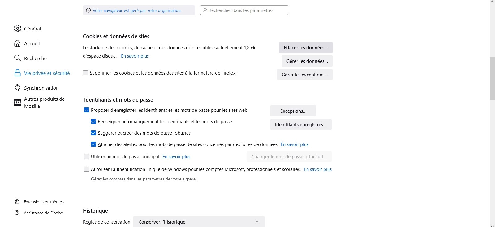
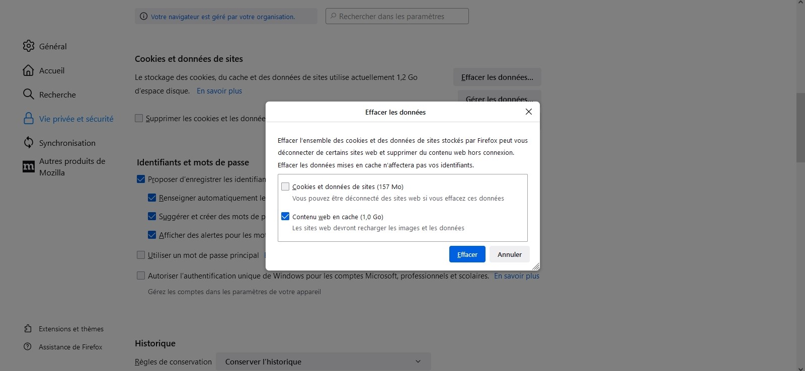
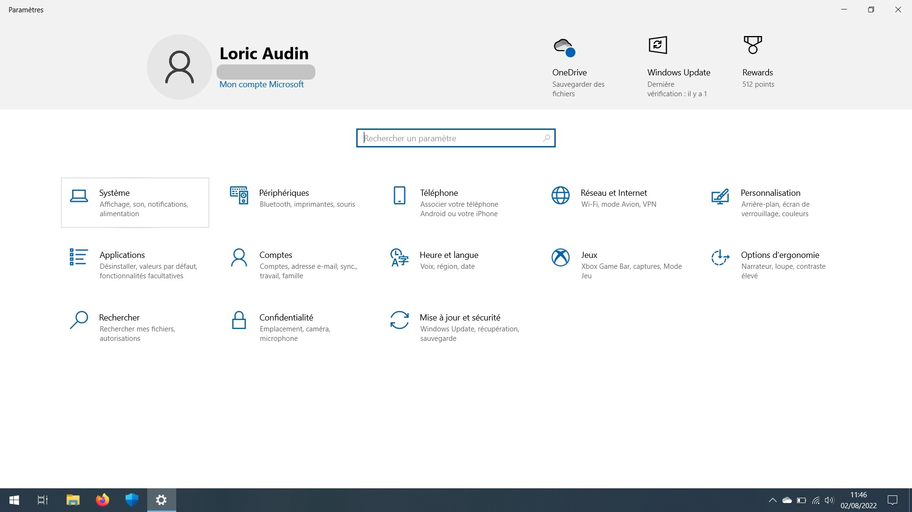

Conseil 1 : Outils de nettoyage de Disque (de 1 Go à 16 Go selon les PC)
Pour Windows XP et supérieur
Le nettoyage du disque peut être utile pour vider le cache de votre ordinateur, pour cela, ouvrez l’explorateur de fichiers, clic droit sur le disque (C:) (disque par défaut avec le logo Windows), puis Propriété.
Cliquez ensuite sur nettoyage du disque et vous gérez ce que vous voulez supprimer. Vous pouvez également nettoyer des fichiers système si vous voulez pour gagner plus d'espace de stockage.

Pour info : Vous pouvez supprimer les fichiers de mise en veille prolongée (déconseillé) si vous n'utilisez pas ce mode.
Enfin valider sur OK.
Et voilà 1 Go libérés dans mon cas
Vous voulez en libérer plus ??? Ok, voici d'autres conseils.
Conseil 2 : Vider le dossier Temp (de 100 Mo à 2 Go selon les PC)
Pour Windows 2000 et supérieur
Tous vos fichiers téléchargés sur internet ou autres sont stockés dans le dossier Temp. Tous les fichiers de ce dossier devraient disparaitre tout seul, mais ce n'est pas toujours le cas.
Ouvrez l'explorateur, tapez dans la barre de chemin %USERPROFILE%\AppData\Local\Temp (ou dans Démarrer, puis dans la barre de recherche) et supprimer tous les fichiers qui peuvent être supprimé.
Et voilà 200 Mo libérés dans mon cas
Conseil 3 : Vider la cache du Windows Store (300 Mo à 500 Mo selon les PC)
Pour Windows 8.1 et supérieur
Le Windows Store enregistre toutes les images et autres fichiers dans un dossier cache afin d'avoir un affichage plus rapide. De temps en temps, il est bie de vider le cache.
Pour le faire, faire Windows + R et taper WSReset.exe
Tout se fait tout seul, une fois fini, l'invite de commande se ferme tout seul et le Windows Store peut s'ouvrir tout seul.
Et voilà 300 Mo libérés dans mon cas
Conseil 4 : Supprimer le cache du navigateur (de 1 Go à 8 Go selon les PC)
Pour Windows 95 et supérieur
La source principale qui prend de la place sur votre PC est le navigateur internet, pourquoi ? parce que toutes les images, tous les cookies, toutes les informations d'identification, tous les téléchargement... bref, TOUT ! Tout est stocké sur votre ordinateur et rien ne se supprime automatiquement. Voici notre solution :
Pour Firefox
Ouvrez Firefox, puis allez dans les paramètres :
Allez dans Vie privée et sécurité, et dans Cookies et données de sites, cliquez sur Effacer les données
Supprimer le contenu web en cache, et si vous voulez les cookies et données de sites (qui vous déconnectera de tous vos comptes).
Pour Google Chrome
Ouvrez Chrome, puis allez dans les paramètres :
Allez dans Sécurité et confidentialité, et cliquez sur Effacer les données de navigation
Supprimer les images et fichiers en cache, et si vous voulez l'historique de navigation et les cookies et autres données de sites (qui vous déconnectera de tous vos comptes).
Et voilà 2 Go libérés dans mon cas (si votre PC est plus âgé et que vous surfer beaucoup sur le net, vous pourrez libérer jusqu'à 8 Go. Incroyable !)
Conseil 5 : Supprimer des applications préinstallées du Microsoft Store (de 100 Mo à 2 Go selon les PC)
Uniquement pour Windows 10
Des applications préinstallées ne vous intéressent pas du tout ? Nous pouvons les retirer. Cela concerne :
Pour y remédier, cliquer sur le bouton Démarrer et tapez PowerShell (pas forcément dans la barre de recherche si vous l'avez retirée)
Ouvrez PowerShell et tapez votre commande selon l'application que vous souhaitez retirer. Par exemple pour Messages, tapez Get-AppxPackage *messaging* | Remove-AppxPackage et appuyez sur Entrée.
Normalement, l'application ne devrait plus apparaître dans le menu Démarrer.
La liste des programmes que vous pouvez enlever sont :
- 3D Builder : tapez Get-AppxPackage *3dbuilder* | Remove-AppxPackage
- Actualités : tapez Get-AppxPackage *bingnews* | Remove-AppxPackage
- Alarmes et Horloge : tapez Get-AppxPackage *windowsalarms* | Remove-AppxPackage
- Astuces (ou Get Started) : tapez Get-AppxPackage *getstarted* | Remove-AppxPackage
- Calculatrice : tapez Get-AppxPackage *windowscalculator* | Remove-AppxPackage
- Caméra : tapez Get-AppxPackage *windowscamera* | Remove-AppxPackage
- Cartes : tapez Get-AppxPackage *windowsmaps* | Remove-AppxPackage
- Contacter le support : tapez dism /online /remove-package /PackageName:Microsoft-Windows-ContactSupport-Package~31bf3856ad364e35~amd64~~10.0.14393.0 pour le 64-bit et dism /online /remove-package /PackageName:Microsoft-Windows-ContactSupport-Package~31bf3856ad364e35~x86~~10.0.14393.0 pour le 32-bit (si besoin, ajustez la dernière ligne pour corriger votre version de Windows)
- Contacts : tapez Get-AppxPackage *people* | Remove-AppxPackage
- Cortana : tapez Get-appxpackage -allusers *Microsoft.549981C3F5F10* | Remove-AppxPackage
- Enregistreur vocal : tapez Get-AppxPackage *soundrecorder* | Remove-AppxPackage
- Films et TV : tapez Get-AppxPackage *zunevideo* | Remove-AppxPackage
- Finance : tapez Get-AppxPackage *bingfinance* | Remove-AppxPackage
- Groove Musique : tapez Get-AppxPackage *zunemusic* | Remove-AppxPackage
- Mail et Calendrier : tapez Get-AppxPackage *windowscommunicationsapps* | Remove-AppxPackage
- Messages : tapez Get-AppxPackage *messaging* | Remove-AppxPackage
- Météo : tapez Get-AppxPackage *bingweather* | Remove-AppxPackage
- Microsoft Solitaire Collection : tapez Get-AppxPackage *solitairecollection* | Remove-AppxPackage
- Office : tapez Get-AppxPackage *officehub* | Remove-AppxPackage
- OneNote : tapez Get-AppxPackage *onenote* | Remove-AppxPackage
- Phone Companion : tapez Get-AppxPackage *windowsphone* | Remove-AppxPackage
- Photos : tapez Get-AppxPackage *photos* | Remove-AppxPackage
- Skype : tapez Get-AppxPackage *skypeapp* | Remove-AppxPackage
- Sport : tapez Get-AppxPackage *bingsports* | Remove-AppxPackage
- Votre téléphone (ou Mobile connecté) : tapez Get-AppxPackage Microsoft.YourPhone -AllUsers | Remove-AppxPackage
- Windows Store (ou Microsoft Store) : tapez Get-AppxPackage *windowsstore* | Remove-AppxPackage
- Xbox : tapez Get-AppxPackage *xboxapp* | Remove-AppxPackage
Et voilà 100 Mo libérés dans mon cas (en retirant 1 seule application)
Conseil 6 : Supprimer les données d'applications désinstallés (de 100 Mo à 4 Go selon les PC)
Pour Windows 3.1 ou supérieur
Certains programmes que vous désinstallez peuvent ne pas supprimer tous leurs données au cas où on souhaiterait la réinstaller afin de ne pas devoir tout reconfigurer ces logiciels.
Ces données peuvent être stockées dans :
- AppData\Local
- AppData\Roaming
- ProgramData
Dans les dossiers %USERPROFILE%\AppData\Local, %USERPROFILE%\AppData\Roaming et C:\ProgramData, supprimer les dossiers des applications que vous vous souvenez avoir désinstallées (sauf le dossier Microsoft et les dossiers de vos pilotes)
Et voilà 2 Go libérés dans mon cas
Conseil 7 : Supprimer tous les points de restauration Windows (de 10 Mo à 50 Go selon les PC)
Pour Windows 10 et supérieur
Vous n'avez pas besoin de points de restauration système ? Vous pouvez les supprimer si vous voulez.
Allez dans le menu Démarrer, puis dans les paramètres
Cliquez sur Système
Dans la rubrique À propos de, cliquez sur Paramètres avancés du système
Dans Protection du système, sélectionnez Configurer
Réglez comme vous le voulez l'utilisation maximale utilisée pour la protection système, et si vous voulez, supprimez tous les points de restauration, pour cela, cliquez sur supprimer.
Enfin, cliquez sur Continuer
Et voilà 40 Go libérés dans mon cas (en supprimant tous les points de restauration)
Conclusion : nous avons réussi à libérer 45,5 Go de stockage. Et vous ?